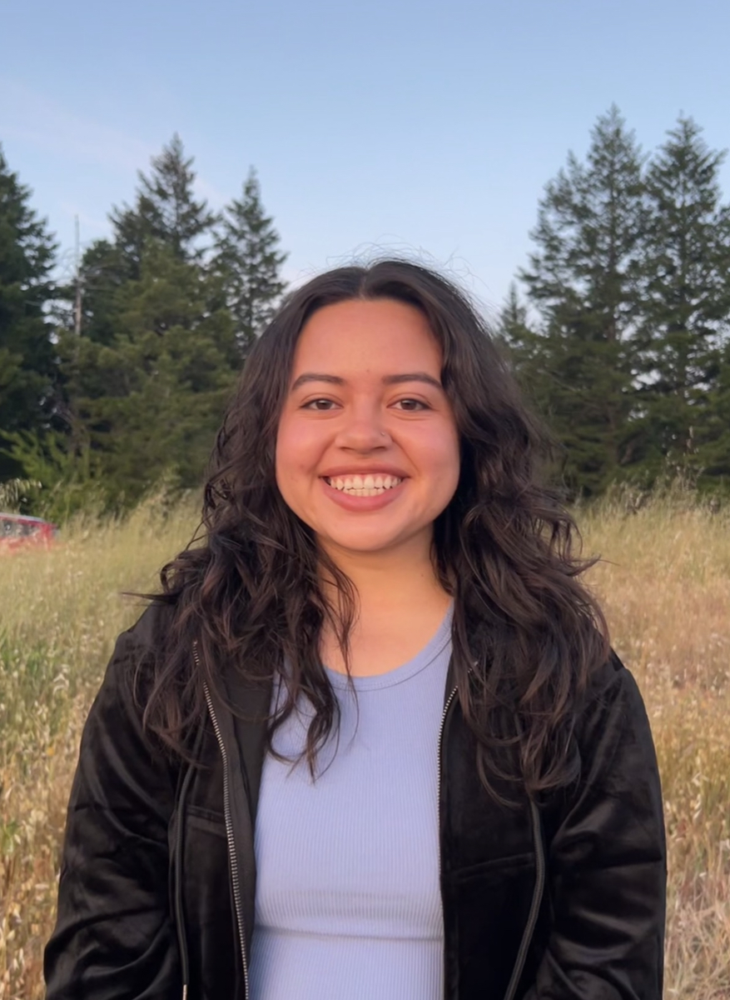

Hola 👋
I'm Nancy, a junior at Brown University studying Computer Science.
I was born and raised in the San Francisco Bay Area. I am currently
interested in coding for social good and the EdTech industry.
I expect to graduate in Spring 2025 and will be looking for full time software engineering roles soon!
